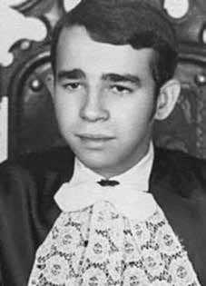

Hamilton
Pereira
Damasceno
CIRCUNSTÂNCIAS DA MORTE
Hamilton Pereira Damasceno foi morto por agentes do Estado brasileiro em circunstâncias que, até a presente data, não foram esclarecidas.
O caso de Hamilton passou a figurar nas listas de desaparecidos políticos a partir de 1979, com a divulgação de seu nome pelo Comitê Brasileiro pela Anistia no Rio de Janeiro. No início de 1972, o irmão de Hamilton, João Pereira Damasceno, decidiu visitá-lo na pensão onde morava, na Rua Campos Sales, na cidade do Rio de Janeiro. De acordo com João, Hamilton pareceu bastante apreensivo e revelou que pretendia sair do Rio de Janeiro, pois sentia que o cerco sobre ele se fechava. Foi a última vez que João se encontrou com o irmão.
Alguns dias depois, ainda segundo o mesmo relato, a mãe de Hamilton, dona Maria Filomena Pereira Damasceno, decidiu procurar pelo filho na pensão. Chegando ao local, foi informada que logo após a visita de João, policiais à paisana estiveram à procura de Hamilton. Sem encontrá-lo, decidiram recolher todos os seus pertences. Dona Maria Filomena nunca mais teve notícias do filho.
Contribuem para esclarecer o caso os depoimentos de Pedro Batalha da Silva e Jorge Joaquim da Silva, ambos funcionários da CCPL, que haviam sido presos no Rio de Janeiro no ano de 1972. Em seu depoimento, Jorge Joaquim menciona que conheceu Hamilton em 1970, mesmo ano em que passou a integrar a ALN. Jorge foi preso dois anos depois, no dia 2 de fevereiro de 1972, e levado para o DOI-CODI do I Exército. Após longo período de detenção ilegal, foi torturado inúmeras vezes, até ser libertado no dia 26 de setembro de 1972.
Jorge passou a responder em liberdade ao processo que o acusava de envolvimento num assalto realizado contra a CCPL por militantes da ALN. Após a liberação, ao retornar para a casa em que morava, Jorge foi abordado por uma vizinha que presenciara sua prisão. De acordo com ela, logo após Jorge ter sido levado, os policiais retiraram de outro carro um jovem moreno, baixo, de cabelo preto e liso. Jorge teve certeza de que se tratava de Hamilton Pereira Damasceno, pois era a única pessoa que conhecia seu endereço.
Pedro Batalha, outro militante, afirma que também conheceu Hamilton na CCPL em 1970, e que passou a atuar na ALN a convite dele. Seu testemunho apresenta elementos de convergência com o depoimento de Jorge Joaquim. Até a presente data, Hamilton Pereira Damasceno permanece desaparecido.
Hamilton Pereira Damasceno was killed by agents of the Brazilian State in circumstances that, to date, have not been clarified.
Hamilton's case began to appear on the lists of politically disappeared people in 1979, with the publication of his name by the Brazilian Committee for Amnesty in Rio de Janeiro. At the beginning of 1972, Hamilton's brother, João Pereira Damasceno, decided to visit him at the pension where he lived, on Rua Campos Sales, in the city of Rio de Janeiro. According to João, Hamilton seemed very apprehensive and revealed that he intended to leave Rio de Janeiro, as he felt that the siege on him was closing. It was the last time João met his brother.
A few days later, according to the same report, Hamilton's mother, Maria Filomena Pereira Damasceno, decided to look for her son at the boarding house. Arriving at the scene, she was informed that shortly after João's visit, plainclothes police officers were looking for Hamilton. Without finding him, they decided to collect all his belongings. Dona Maria Filomena never heard from her son again.
The statements of Pedro Batalha da Silva and Jorge Joaquim da Silva, both CCPL employees, who had been arrested in Rio de Janeiro in 1972, contribute to clarifying the case. In his statement, Jorge Joaquim mentions that he met Hamilton in 1970, the same year he joined the ALN. Jorge was arrested two years later, on February 2, 1972, and taken to the DOI-CODI of the 1st Army. After a long period of illegal detention, he was tortured countless times, until he was released on September 26, 1972.
Jorge began to respond freely to the case that accused him of involvement in an assault carried out against the CCPL by ALN militants. After his release, upon returning to the house where he lived, Jorge was approached by a neighbor who had witnessed his arrest. According to her, shortly after Jorge was taken, the police removed a short, dark-skinned young man with straight black hair from another car. Jorge was sure that it was Hamilton Pereira Damasceno, as he was the only person who knew his address.
Pedro Batalha, another activist, states that he also met Hamilton at the CCPL in 1970, and that he started working at the ALN at his invitation. His testimony presents elements of convergence with the testimony of Jorge Joaquim. To date, Hamilton Pereira Damasceno remains missing.
Hamilton Pereira Damasceno fue asesinado por agentes del Estado brasileño en circunstancias que, hasta la fecha, no han sido esclarecidas.
El caso de Hamilton comenzó a aparecer en las listas de desaparecidos políticos en 1979, con la publicación de su nombre por el Comité Brasileño de Amnistía en Río de Janeiro. A principios de 1972, el hermano de Hamilton, João Pereira Damasceno, decidió visitarlo en la pensión donde vivía, en la Rua Campos Sales, en la ciudad de Río de Janeiro. Según João, Hamilton parecía muy aprensivo y reveló que tenía intención de abandonar Río de Janeiro, pues sentía que el cerco sobre él se estaba cerrando. Fue la última vez que João vio a su hermano.
Unos días después, según el mismo informe, la madre de Hamilton, María Filomena Pereira Damasceno, decidió buscar a su hijo en la pensión. Al llegar al lugar, le informaron que poco después de la visita de João, agentes de policía vestidos de civil estaban buscando a Hamilton. Al no encontrarlo, decidieron recoger todas sus pertenencias. Doña María Filomena nunca volvió a saber de su hijo.
Las declaraciones de Pedro Batalha da Silva y Jorge Joaquim da Silva, ambos empleados de la CCPL, que habían sido detenidos en Río de Janeiro en 1972, contribuyen al esclarecimiento del caso. En su declaración, Jorge Joaquim menciona que conoció a Hamilton en 1970, el mismo año en que ingresó a la ALN. Jorge fue detenido dos años después, el 2 de febrero de 1972, y trasladado al DOI-CODI del 1.º Ejército. Luego de un largo período de detención ilegal, fue torturado en innumerables ocasiones, hasta ser liberado el 26 de septiembre de 1972.
Jorge comenzó a responder libremente al caso que lo acusaba de estar involucrado en un asalto perpetrado contra el CCPL por militantes de la ALN. Luego de su liberación, al regresar a la casa donde vivía, Jorge fue abordado por un vecino que había presenciado su detención. Según ella, poco después de que se llevaron a Jorge, la policía sacó de otro automóvil a un joven bajo, de piel oscura y cabello negro y liso. Jorge estaba seguro de que se trataba de Hamilton Pereira Damasceno, pues era la única persona que conocía su dirección.
Pedro Batalha, otro activista, afirma que también conoció a Hamilton en el CCPL en 1970, y que empezó a trabajar en la ALN por invitación suya. Su testimonio presenta elementos de convergencia con el testimonio de Jorge Joaquim. A la fecha, Hamilton Pereira Damasceno continúa desaparecido.